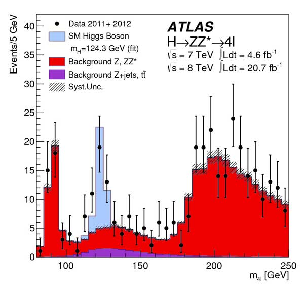

Mass plot showing backgrounds for the decay Higgs boson → two Z bosons → four leptons.
These backgrounds are the direct production of two Z bosons without any Higgs involved, or from rare decays of a single Z boson to four leptons, or other such backgrounds. The Higgs boson to two Z bosons followed by their decay to four leptons has to be seen on top of these backgrounds. © CERN